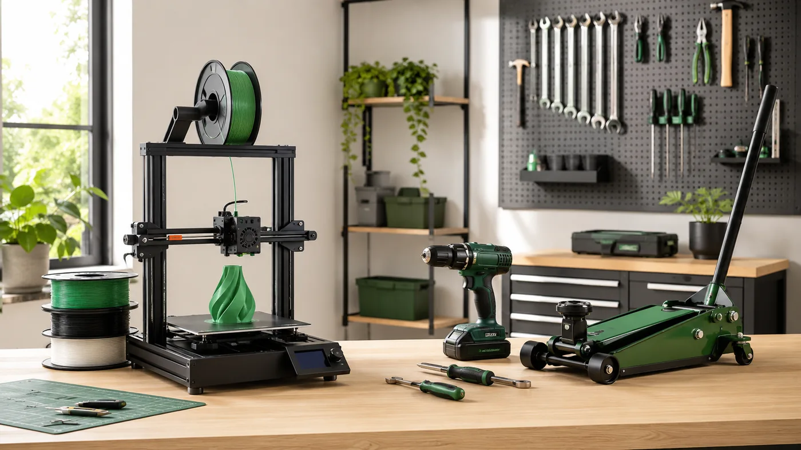

Impresión 3D
Impresoras, filamentos y accesorios
Comparativas de equipos FDM, materiales y accesorios según proyecto, compatibilidad y facilidad de uso.
Entrar en Impresión 3D →Analizamos productos con un enfoque práctico: qué cambia de verdad entre opciones, para quién encaja cada una y qué conviene revisar antes de comprar.

Empieza por el tipo de producto y entra después en las guías y comparativas concretas.
Comparativas de equipos FDM, materiales y accesorios según proyecto, compatibilidad y facilidad de uso.
Entrar en Impresión 3D →
Potencia, capacidad, compatibilidad, equipamiento y adecuación a cada tipo de trabajo.
Entrar en Herramientas →
Guías centradas en comodidad, autonomía, mantenimiento y prestaciones útiles en el día a día.
Entrar en Hogar →Una selección de contenidos ya publicados para llegar directamente a lo más útil.

Modelos FDM comparados por volumen, materiales, estructura, automatización y tipo de usuario.
Ver comparativa →
Opciones para distintos niveles de uso, desde bricolaje doméstico hasta trabajos frecuentes.
Ver comparativa →
Capacidad, altura mínima, elevación y adecuación a distintos tipos de vehículo.
Ver comparativa →Una buena comparativa debe ayudarte a entender qué cambia la experiencia de uso y cuándo una opción deja de tener sentido.
Priorizamos lo que realmente diferencia un producto de otro.
Indicamos puntos fuertes y aspectos menos adecuados según el uso.
Precios, versiones y disponibilidad se revisan como datos cambiantes.